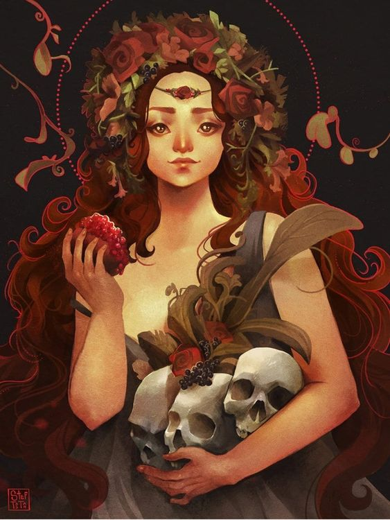
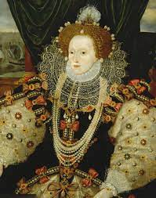
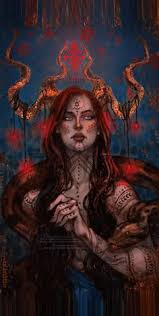
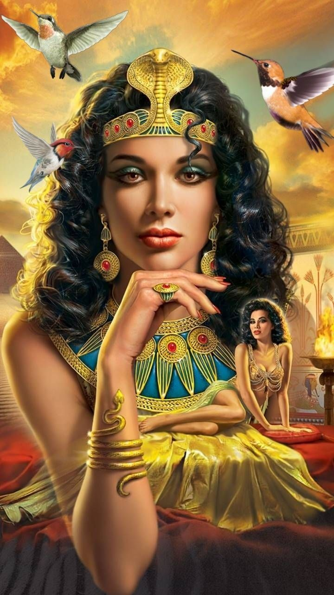
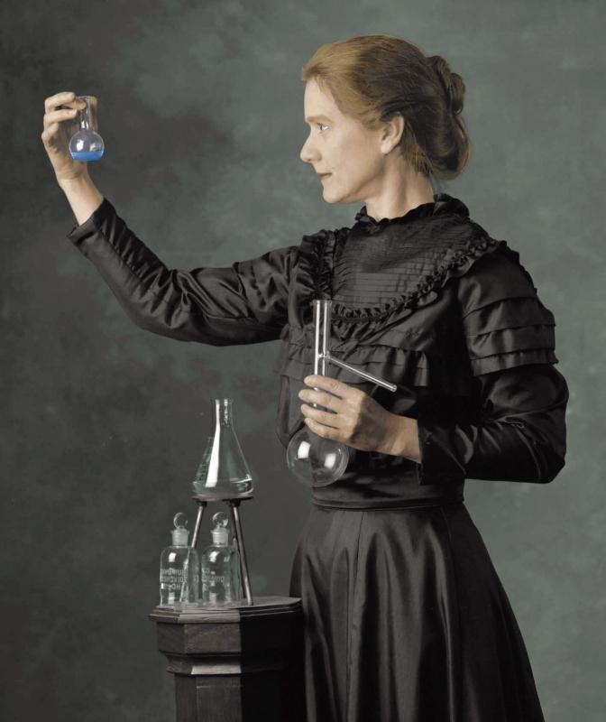

Perséfone
Deusa grega da agricultura, das flores, dos frutos, das ervas e da fertilidade
Rainha Elizabeth I
Conhecida como a Rainha Virgem, foi a última monarca da Casa Tudor a governar a Inglaterra e a Irlanda.
Lilith
Lilith representa a figura da insurgência. A imagem da mulher que não aceitou ser subserviente à vontade divina ou à vontade dos homens.
Cleópatra
Rainha do Egito de 51 a.C. a 30 a.C., reconhecida como uma das mulheres mais importantes da Antiguidade.
Marie Curie
Cientista de origem polonesa que revolucionou o estudo da radioatividade, e com o marido Pierre, descobriu os elementos químicos rádio e polônio.
Joana d'Arc
Joana d’Arc foi uma camponesa e santa francesa canonizada pela Igreja Católica, considerada uma heroína da França pelos seus feitos durante a Guerra dos Cem Anos.